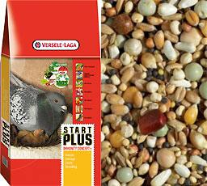
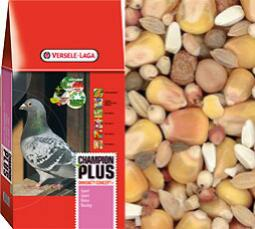
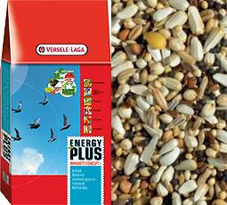
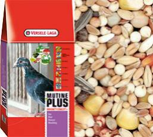

МЕНЮ
ПИТОМНИК
ПОЧТОВЫХ
ГОЛУБЕЙ
ПОЛЁТ
маленькие голуби приносят большие новости
START PLUS |
Зерновая смесь для голубей со специальной концепцией для иммунитета + специальные гранулы для размножения голубей. START PLUS - это лучшая смесь для разведения голубей, благодаря идеальному содержанию белка и легко усваиваемым гранулам. Содержит 20% кукурузы, мелкий горох и дополнительно ряд витаминов и микроэлементов. Витамины: A, D3, E, K3, B1, B2, B3, B12, C, PP, фолиевая кислота, биотин, холин хлорида. минералы / микроэлементы: кальций, фосфор, магний, натрий, железо, марганец, цинк, медь, кобальт, селен. |
|---|---|
CHAMPION PLUS |
Зерновая смесь для спортивных, высоколетных и бойных голубей (20кг) пр-во Бельгия Полный комплекс питания для голубей, обогащенный витаминами для иммунитета + специальные гранулы. Champion Plus – разнообразная смесь, которая подходит как для молодых, так и для взрослых голубей в период соревнований (полетов). Витамины: A, D3, E, K3, B1, B2, B3, B12, C, PP, фолиевая кислота, биотин, холин хлорида. Минералы / микроэлементы: кальций, фосфор, магний, натрий, железо, марганец, цинк, медь, кобальт, селен. |
ENERGY PLUS |
Зерновая смесь для голубей, обогащенная специальными добавками для иммунитета + специальные гранулы. ENERGY PLUS - это питательная смесь с очень высоким содержанием жира. Давать голубям в период линьки, после продолжительных полетов, перед соревнованиями и т.д. А также применять в целях восстановления жизненных сил после перенесенных заболеваний и вакцинации. ENERGY PLUS дополнительно содержит ряд витаминов и микроэлементов. Витамины: A, D3, E, K3, B1, B2, B3, B12, C, PP, фолиевая кислота, биотин, холин хлорида. минералы / микроэлементы: кальций, фосфор, магний, натрий, железо, марганец, цинк, медь, кобальт,селен. |
MUTINE PLUS |
Полный комплекс питания для голубей, обогащенный витаминами для иммунитета + гранулы для линьки голубей. Mutine Plus представляет собой разнообразную сбалансированную смесь для линьки, которая гарантирует превосходную смену пера. Витамины: A, D3, E, K3, B1, B2, B3, B12, C, PP, фолиевая кислота, биотин, холин хлорида. Минералы / микроэлементы: кальций, фосфор, магний, натрий, железо, марганец, цинк, медь, кобальт, селен. |